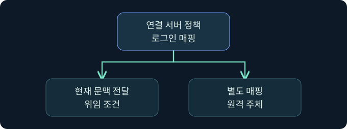

SQL 연결 서버와 원격 로그인 매핑
링크 구성, RPC Out과 분산 데이터 액세스, 원격 권한을 대조합니다.
1. 연결 서버는 데이터와 신원이 함께 넘어가는 경계입니다
가상의 보고서 인스턴스 A는 보관 인스턴스 B에서 월별 집계를 읽습니다. 사용자는 A에만 연결하지만, 쿼리의 일부는 A의 공급자를 통해 B에서 처리될 수 있습니다. 이때 B가 인정하는 로그인은 A에서 사용자가 보는 로그인과 다를 수 있습니다. 사례는 가상이며 원격 연결, 데이터 조회, 로그인 매핑 변경은 미실행입니다.
2. 등록된 이름과 실제 목적지를 구별합니다
연결 서버 이름은 A에 등록된 논리적 별칭입니다. 공급자는 원격 데이터 원본과 통신하는 구성 요소이며, 원본은 다른 SQL Server 외에도 공급자가 지원하는 데이터 시스템일 수 있습니다. 별칭, 공급자, 원격 주소, 기본 카탈로그를 자산 문서에서 각각 확인합니다. A에서 B가 등록됐다는 사실은 B에서 A를 향한 링크가 있다는 뜻도, 실제 네트워크 통신이 가능하다는 뜻도 아닙니다.
3. 매핑은 원격 권한의 출발점입니다

| 정책 | 원격에서 확인할 사항 | 자주 생기는 오해 |
|---|---|---|
| 현재 보안 문맥 전달 | 지원되는 인증과 위임 조건, 원격 로그인 | A의 성공 로그인만으로 두 번째 홉을 보장 |
| 명시적인 로그인 매핑 | 해당 로컬 로그인에 대응하는 원격 주체 | A와 B의 역할이 같다고 가정 |
| 매핑이 없는 로그인에 대한 기본 정책 | 연결 거부, 별도 문맥 또는 지원되는 기본 동작 | 개별 매핑이 없으면 항상 접속 불가 |
A의 낮은 권한 로그인 여러 개가 B의 같은 계정에 매핑되면 B의 권한과 감사 식별성이 달라질 수 있습니다. 원격 계정이 이미 가진 권한은 B가 적용합니다. Windows 문맥 전달에는 제품·공급자와 Kerberos 위임 조건이 있으며, Microsoft 문서에 명시된 연결 서버의 제한 위임 지원과 리소스 기반 제한 위임 지원 여부를 구분합니다.
4. 분산 데이터 액세스와 RPC Out을 따로 확인합니다
| 관측 항목 | 의미 | 별도 조건 |
|---|---|---|
| Data Access | 연결 서버의 분산 쿼리 사용 옵션 | 공급자와 대상 연결, 원격 권한 |
| RPC Out | 이 인스턴스에서 대상 방향으로 RPC를 허용하는 옵션 | 원격 인증과 호출 권한 |
| RPC | 연결 서버 쪽에서 들어오는 RPC 관련 옵션 | 반대 방향의 실제 구성 |
RPC Out이 꺼져 있어도 분산 데이터 조회의 허용 여부는 따로 확인합니다. 켜져 있어도 원격 프로시저를 실행할 권한이 생기는 것은 아닙니다. SQL 명령이 어느 엔진에서 평가됐는지와 원격 운영체제 동작이 관측됐는지도 구분합니다.
5. 원격 호출 없이 현재 등록을 점검합니다
아래는 A의 카탈로그만 읽는 미실행 예입니다. 원격 원본이나 자격 증명은 조회하지 않습니다.
SELECT name, provider, is_data_access_enabled, is_rpc_out_enabled
FROM sys.servers
WHERE is_linked = 1;등록과 옵션의 관측입니다. 뷰의 행은 조회자의 메타데이터 가시성에 영향을 받을 수 있습니다. 권한이 있는 기존 감사 자료에서 sys.linked_logins의 매핑 범위와 원격 로그인 정책을 대조합니다. 버전에 따라 필요한 조회 권한이 다르며, 목록을 보기 위해 권한을 변경하는 절차는 다루지 않습니다.
6. 공식 콘솔에서 조사 세션의 문맥을 구분합니다
실제 화면 147: Fortra Beacon Console
출처는 Fortra 콘솔 안내입니다. 2026년 11월 10일 현행 안내서를 대조했습니다. 공식 일반 화면이며 버전에 따라 메뉴가 다를 수 있습니다. Cobalt Strike → Visualization → Session Table → 가상 LAB-REPORT05 우클릭 → Interact로 여는 미실행 예입니다. 하단 입력 줄에 getuid를 넣고 Enter를 누르는 위치를 확인합니다. 관측 세션의 보고 문맥을 읽는 값이며 별도 저장은 없습니다. 위쪽 반환을 선택한 호스트와 대조합니다. 이번 반환 및 SQL 확장의 연결 서버 목록 사진은 확보하지 못했습니다.
7. SSMS에서 카탈로그 조회의 결과 위치를 확인합니다
SSMS → Object Explorer → 가상 LAB-REPORT05의 승인된 인스턴스 선택 → New Query를 엽니다. 입력 창에 5절 쿼리를 넣습니다. is_linked = 1은 로컬 인스턴스 행과 연결 서버를 구분하는 값입니다. Execute를 누르는 미실행 예이며 별도 저장은 없습니다. Results의 이름·공급자·두 옵션을 대조하고 실패 시 Messages에서 대상과 권한을 확인합니다. 이번 SSMS 결과 사진은 확보하지 못했습니다. Microsoft SSMS 쿼리 안내
8. 조건이 달라지면 관측을 다시 해석합니다
| 가상 상황 | 지금 확인할 수 있는 범위 | 다음 확인 |
|---|---|---|
| 등록은 보이고 원격 인증 실패 | 로컬 구성은 존재 | 공급자·연결 보안·두 번째 홉 |
| 원격 로그인 성공, 테이블 조회 거부 | 인증은 됐지만 인가 실패 가능 | B의 DB 사용자와 객체 권한 |
| RPC Out만 활성 | 출발 방향 옵션만 확인 | 실제 호출 경로와 감사 |
| 여러 로컬 세션이 동일 원격 계정 사용 | 원격 로그만으로 원래 사용자를 가리기 어려움 | A와 B의 시간·업무 요청 식별자 |
9. 두 서버의 기록을 연결합니다
A의 요청 시각, 로컬 로그인과 링크 별칭을 적고 B에서는 실제 수신 로그인, 데이터베이스, 작업 결과를 기록합니다. 같은 시각의 배치 작업이 있을 수 있으므로 연결 ID나 업무 식별자를 우선 대조합니다. 한 쪽에서만 보이는 오류는 해당 관측 범위를 표시합니다. 네트워크 도달성, 인증, 객체 인가, 쿼리 결과를 서로 다른 결론으로 남깁니다.
10. 복습과 즉시 해설
복습 1. 별칭은 원격 호스트 이름과 항상 같나요?
해설: 로컬 등록 이름입니다. 실제 원본은 구성 자료에서 확인합니다.
복습 2. A의 역할은 B에도 그대로 적용되나요?
해설: 원격 로그인 매핑과 B의 역할을 별도로 읽습니다.
복습 3. A에서 Windows 인증이 되면 두 번째 홉도 가능한가요?
해설: 공급자와 위임 조건, B의 인증을 따로 확인합니다.
복습 4. RPC Out이 꺼지면 모든 조회가 막히나요?
해설: 분산 데이터 액세스와 RPC는 별도 옵션입니다.
복습 5. RPC Out이 켜지면 원격 실행 권한을 얻나요?
해설: 방향 옵션이며 원격 호출 권한은 B에서 따로 판단합니다.
복습 6. 카탈로그에 링크가 보이면 연결이 입증됐나요?
해설: 구성의 증거입니다. 실제 인증과 요청 기록이 필요합니다.
복습 7. B에서 같은 로그인 이름이면 요청자도 같은가요?
해설: 공통 매핑을 사용할 수 있으므로 A의 요청과 연결합니다.
복습 8. 콘솔의 계정 표시로 원격 SQL 로그인을 확인하나요?
해설: 콘솔 문맥입니다. B의 로그인 기록을 확인합니다.
11. 공식 자료와 확인 범위
- Microsoft · 연결 서버와 위임 지원
- Microsoft · 연결 서버의 보안 설정
- Microsoft · sys.servers
- Microsoft · sys.linked_logins
2026년 11월 10일 공식 자료를 확인했습니다. 제품 실행, 원격 조회, 자격 증명 작업과 설정 변경은 미실행입니다.